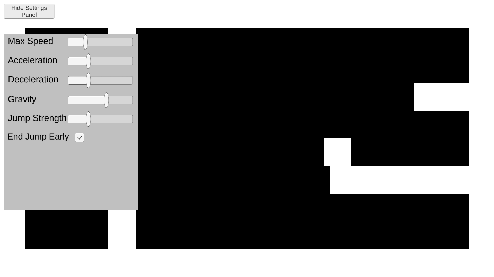

Online Class
What is it?
Short explanation: I used Unity and Angular to create an interactive lesson on game mechanics to make up for a cancelled class.
How and Why
Long explanation: While working at the Macquarie University College, I had to prepare a make-up lesson due to a class falling on a public holiday.
The topic of the lesson was game mechanics. I believe it to be an extremely important topic, so I didn't feel that lecturing my
students through a video or making them read a long article was sufficient to communicate the nuances of the topic.
An important principle I learned during my own time as a student is that learning is best facilitated through experience, which
is why I created this interactive lesson, allowing students to experiment with a few basic game mechanics on their own, hopefully
communicating the importance of careful mechanical design and get them thinking granularly about those game mechanics.
This also served as a learning experience for me, as a way to put some of my more recent skills into practice. Both with Unity,
where I practiced using scriptable objects to make a robust and expandable dialogue system and with Angular, where I
used local storage to save and resume the lesson and track progress across different sessions. I also used that locally
stored information for a bit of an anti-cheat trick with the password at the end of the lesson.
Screenshot:

Sorry, mobile users, this only works on PCs.
You can access the lesson here:
Start Class
If you'd like to skip to the end:
(all pages are accessible from the sidenav)
Skip to the End